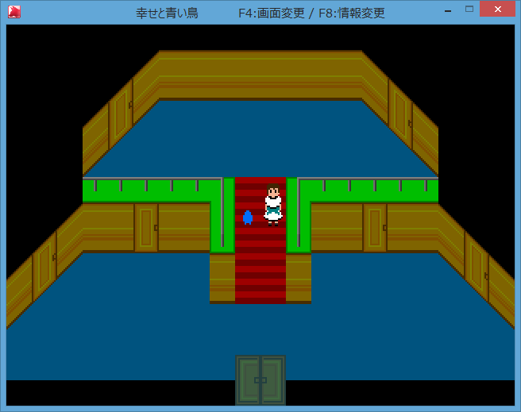

幸せと青い鳥 オープニング
彼と喧嘩して走り去って、
気付けば場所も分からない森の中。
雨も降り始め、
私はいつの間にか目の前に在った館に入った。
「はぁ、なんで急に雨なんか…」
私の身体は少し濡れていた。
別に濡れても平気だが、流石に雨宿れるならそうしたかった。
しかしここは何処だろう。
「誰か居ますか？」
大声で尋ねてみる。
とりあえず家主に事情を話したい。
雨が止むまで居させてくれるか、傘を貸してくれればいい。
できれば街の方向も。
すると現れたのは、一匹の青い小鳥だった。
「ピヨッ！」
小鳥は高く短く鳴くと、私に手紙を投げつけてきた。
だいぶ雑な渡し方であるが、くちばしにくわえながら鳴くなど無理だろう。
手紙は以下の通りである。
ようこそ、私の館へ。
私は魔女。
あなたにチャンスをあげようと思って、
ここに招待しました。
一つだけ、願いを叶えてあげます。
雨が止むまでに私の場所まで来てください。
願いを一つ。
非情に胡散臭い内容だ。
しかし雨が止むまでの間、何もせず待つのはちょっと詰まらない。
私はその鳥に、参加の意思を告げると、さっそく館の中を歩き回ることにした。
この鳥、ついてくるんだ。
何かの役に立ってくれればいいけど。

Ｂの部屋に入る